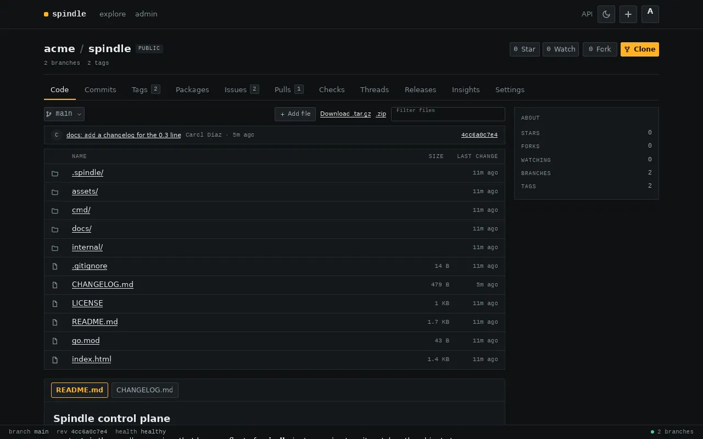

01 / REPOSITORY
The repository page
Clone URLs for HTTP and SSH, the default branch, the latest commit and the file tree. With anonymous_read on — the default — public repositories clone and browse without a session.
- smart HTTP v0/v2 · SSH
- auto-create on first push
- source archives: tar.gz, zip
